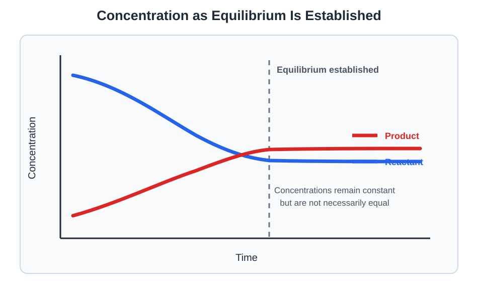

Equilibrium
Explore reversible reactions, equilibrium constants, reaction quotients, concentration calculations, and the ways chemical systems respond to changes in conditions.
Topics
Dynamic Equilibrium and K
Understand dynamic equilibrium and write equilibrium expressions using concentrations or partial pressures.
Reaction Quotients and ICE Tables
Use Q to predict reaction direction and use ICE tables to calculate equilibrium concentrations.
Equilibrium Shifts and Solubility
Apply Le Châtelier’s principle to changes in concentration, pressure, and temperature and analyze solubility equilibria using Ksp.
Dynamic Equilibrium and K
Many chemical reactions are reversible. In a reversible reaction, products can react to reform the original reactants.
The forward and reverse reactions occur simultaneously. In a closed system, the reaction may eventually reach dynamic equilibrium.
Dynamic Equilibrium
Dynamic equilibrium occurs when the forward and reverse reaction rates become equal.
• The forward and reverse reactions continue
• The forward and reverse rates are equal
• Reactant and product concentrations remain constant
• Reactant and product concentrations are not necessarily equal

A horizontal concentration line does not mean the reaction has stopped. Particles continue reacting in both directions, but the two reactions occur at equal rates.
The Equilibrium Constant
The equilibrium constant, K, describes the relationship between equilibrium amounts of products and reactants at a particular temperature.
For the general reaction:
The concentration-based equilibrium expression is:
Each concentration is raised to the power of its coefficient in the balanced equation.
Calculating Kc
Example: Equilibrium Concentrations
Consider the reaction:
At equilibrium:
- [N2O4] = 0.400 M
- [NO2] = 0.200 M
Write the equilibrium expression:
Substitute the equilibrium concentrations:
What the Magnitude of K Means
| Value of K | Equilibrium Mixture |
|---|---|
| K much greater than 1 | Products are favored at equilibrium |
| K close to 1 | Appreciable amounts of both reactants and products are present |
| K much less than 1 | Reactants are favored at equilibrium |
The value of K describes the equilibrium position, not how quickly equilibrium is reached. A reaction can have a large K and still proceed slowly.
Pure Solids and Liquids
Pure solids and pure liquids are not included in equilibrium expressions because their effective concentrations remain constant.
Example: Heterogeneous Equilibrium
CaCO3 and CaO are pure solids, so they are not included in the equilibrium expression.
Equilibrium Expressions Using Pressure
For reactions containing gases, equilibrium may be expressed using equilibrium partial pressures instead of concentrations. This produces Kp.
For the reaction:
The pressure-based equilibrium expression is:
Kc and Kp describe the same equilibrium using different measurements.
In this relationship, Δn equals the total moles of gaseous products minus the total moles of gaseous reactants.
Changing a Chemical Equation
If a balanced equilibrium equation is changed, its equilibrium constant must also be changed.
| Change to the Equation | Change to K |
|---|---|
| Reverse the reaction | K becomes 1/K |
| Multiply all coefficients by n | K becomes Kn |
| Divide all coefficients by n | K becomes K1/n |
| Add two reactions | Multiply their equilibrium constants |
Example: Reversing a Reaction
Suppose the following reaction has K = 4.00:
For the reverse reaction:
Temperature and the Equilibrium Constant
For a particular balanced reaction, the value of K remains constant as long as temperature remains constant.
Changing temperature can change K.
Practice Questions
Question 1: Writing a Kc Expression
Write the Kc expression for:
Show solution
Place the product concentration in the numerator and reactant concentrations in the denominator. Use the coefficients as exponents.
Question 2: Heterogeneous Equilibrium
Write the Kc expression for:
Show solution
NH4HS is a pure solid, so it is not included in the equilibrium expression.
Question 3: Calculating Kc
Consider the reaction:
At equilibrium:
- [H2] = 0.200 M
- [I2] = 0.300 M
- [HI] = 0.600 M
Calculate Kc.
Show solution
Write the equilibrium expression:
Substitute the equilibrium concentrations:
Because K is greater than 1, products are favored at equilibrium.
Question 4: Interpreting the Magnitude of K
A reaction has an equilibrium constant of 2.5 × 10−8 at a particular temperature.
Are reactants or products favored? Does this value reveal how quickly equilibrium is reached?
Show solution
Because K is much smaller than 1, reactants are strongly favored. The equilibrium mixture contains relatively little product.
The value of K does not provide information about reaction speed. It describes the equilibrium position, not how quickly equilibrium is reached.
Question 5: Manipulating an Equilibrium Constant
For the reaction:
Determine K for each reaction below.
Show solution
The first reaction is the reverse of the original, so take the reciprocal of K.
In the second reaction, every coefficient has been multiplied by two. Square the original K.
Question 6: Calculating Kp
Consider the gaseous equilibrium:
At equilibrium:
- PCOCl₂ = 0.400 atm
- PCO = 0.200 atm
- PCl₂ = 0.300 atm
Calculate Kp.
Show solution
Question 7: Converting Kc to Kp
For the reaction:
Kc = 0.500 at 500 K. Calculate Kp. Use R = 0.08206 L·atm/(mol·K).
Show solution
First, determine Δn:
Use the conversion equation:
Watch: Equilibrium Constants
Watch a worked example showing how to write an equilibrium expression and calculate K from equilibrium concentrations or partial pressures.
Reaction Quotients and ICE Tables
The reaction quotient, Q, determines whether a system is currently at equilibrium and, if it is not, predicts which direction the reaction will proceed.
The Reaction Quotient
Q has the same mathematical form as the equilibrium constant. The difference is that Q uses the concentrations or pressures present at a particular moment, while K uses values measured at equilibrium.
For the general reaction:
| Comparison | Meaning | Direction of Change |
|---|---|---|
| Q < K | Too few products relative to equilibrium | Reaction proceeds toward products |
| Q = K | The system is at equilibrium | No net change |
| Q > K | Too many products relative to equilibrium | Reaction proceeds toward reactants |
Q = K: already at equilibrium
Q > K: shift left
Example: Predicting Reaction Direction
Consider the reaction:
At a particular temperature, Kc = 8.00. A mixture currently contains:
- [H2] = 0.500 M
- [I2] = 0.500 M
- [HI] = 1.00 M
Calculate Qc:
Because Qc < Kc, the reaction proceeds toward the products. H2 and I2 decrease while HI increases.
ICE Tables
An ICE table organizes the initial concentrations, changes in concentration, and equilibrium concentrations for a reversible reaction.
C = Change in concentration
E = Equilibrium concentration
The changes in an ICE table must follow the coefficients in the balanced equation.
For the reaction:
If the reaction proceeds toward products and A changes by −x, then B changes by −2x and C changes by +3x.
| A | B | C | |
|---|---|---|---|
| Initial | [A]0 | [B]0 | [C]0 |
| Change | −x | −2x | +3x |
| Equilibrium | [A]0 − x | [B]0 − 2x | [C]0 + 3x |
Steps for Solving an ICE Table
- Write the balanced equilibrium equation.
- Enter the initial concentrations in the first row.
- Use Q and K, or the starting amounts, to determine which direction the reaction proceeds.
- Represent the concentration changes using x and the coefficients from the equation.
- Add the initial and change rows to obtain the equilibrium expressions.
- Substitute the equilibrium expressions into K and solve for x.
- Use x to calculate each equilibrium concentration.
Example: Solving an ICE Table
Consider the reaction:
Kc = 3.00. Initially, [A] = 0.800 M and [B] = 0.200 M. Calculate the equilibrium concentrations.
First, calculate Q:
Because Q < K, the reaction proceeds toward B.
| A | B | |
|---|---|---|
| Initial | 0.800 M | 0.200 M |
| Change | −x | +x |
| Equilibrium | 0.800 − x | 0.200 + x |
Substitute into the equilibrium expression:
Calculate the equilibrium concentrations:
Check the result:
ICE Tables with Coefficients
Example: Using Stoichiometric Changes
Consider the reaction:
Initially, [X2] = 1.00 M and [X] = 0. If 0.250 M of X2 dissociates, determine both equilibrium concentrations.
X2 decreases by 0.250 M. Because two moles of X form for each mole of X2 consumed, X increases by 0.500 M.
| X2 | X | |
|---|---|---|
| Initial | 1.00 M | 0 M |
| Change | −0.250 M | +0.500 M |
| Equilibrium | 0.750 M | 0.500 M |
The equilibrium constant would be:
Checking an ICE-Table Answer
An equilibrium concentration cannot be negative. If solving an equation produces multiple mathematical answers, reject any value of x that would create a negative concentration.
• Confirm that every concentration is positive
• Substitute the concentrations back into the K expression
• Confirm that the calculated value matches the given K
Practice Questions
Question 1: Calculating Q
Consider the reaction:
At a particular temperature, Kc = 5.00. A mixture contains:
- [A] = 0.400 M
- [B] = 0.200 M
- [C] = 0.300 M
Calculate Qc and predict the direction in which the reaction will proceed.
Show solution
Qc is less than Kc, so the reaction proceeds toward products.
A and B decrease while C increases until equilibrium is reached.
Question 2: Reasoning from Q and K
For a reaction at a certain temperature, Qc = 12.0 and Kc = 3.00.
Which direction will the reaction proceed, and how will reactant and product concentrations change?
Show solution
Because Qc > Kc, the mixture currently contains too much product relative to equilibrium.
The reaction proceeds toward reactants. Product concentrations decrease while reactant concentrations increase.
Question 3: A One-to-One ICE Table
Consider the reaction:
Kc = 4.00. Initially, [A] = 1.00 M and [B] = 0. Determine the equilibrium concentrations.
Show solution
| A | B | |
|---|---|---|
| Initial | 1.00 | 0 |
| Change | −x | +x |
| Equilibrium | 1.00 − x | x |
Question 4: Using Stoichiometric Change
Consider the equilibrium:
Initially, [N2O4] = 0.800 M and [NO2] = 0. At equilibrium, [NO2] = 0.600 M.
Determine [N2O4] at equilibrium and calculate Kc.
Show solution
For every x of N2O4 consumed, 2x of NO2 forms.
Therefore, N2O4 decreases by 0.300 M.
Question 5: ICE Table Requiring a Quadratic
Consider the reaction:
Kc = 4.00. Initially, [A] = 1.00 M, [B] = 1.00 M, and [C] = 0. Calculate the equilibrium concentrations.
Show solution
| A | B | C | |
|---|---|---|---|
| Initial | 1.00 | 1.00 | 0 |
| Change | −x | −x | +x |
| Equilibrium | 1.00 − x | 1.00 − x | x |
Rearrange the equation:
Use the quadratic formula:
The two mathematical results are approximately 1.64 and 0.610. The value 1.64 would make the reactant concentrations negative, so it must be rejected.
Question 6: Finding an ICE-Table Error
For the reaction:
A student writes the change row as −x for A and +x for B. Explain the error and provide the correct change row when the reaction proceeds toward products.
Show solution
The changes must follow the coefficients in the balanced equation. Two moles of A are consumed for every one mole of B formed.
The correct change row is:
Using −x for A would ignore the two-to-one stoichiometric relationship.
Watch: Q and ICE Tables
Watch a worked example showing how Q predicts reaction direction and how an ICE table determines equilibrium concentrations.
Equilibrium Shifts and Solubility
This lesson will examine how equilibrium systems respond to disturbances and introduce solubility-product calculations.